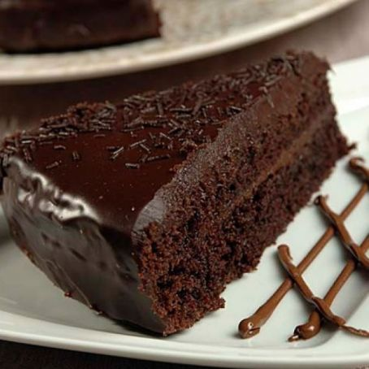
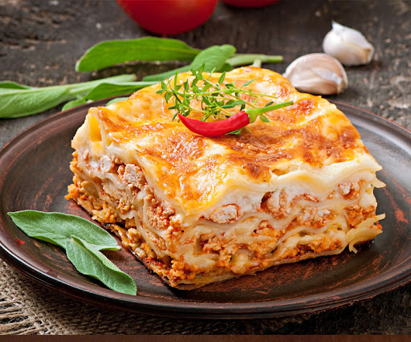
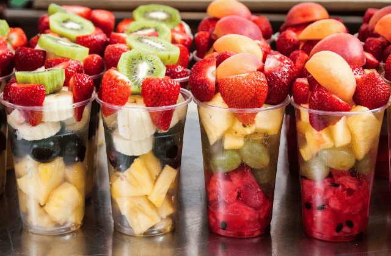

Receita 1: Bolo de Chocolate
Ingredientes
- 2 xícaras de farinha de trigo
- 1 xícara de açúcar
- 1 xícara de chocolate em pó
- 1/2 xícara de óleo
- 1 xícara de água
- 1 colher de fermento em pó
Modo de Preparo
- Preaqueça o forno a 180°C.
- Em uma tigela, misture a farinha, o açúcar e o chocolate em pó.
- Adicione o óleo e a água e misture bem.
- Por último, adicione o fermento e misture até incorporar.
- Despeje a massa em uma forma untada e enfarinhada.
- Leve ao forno por cerca de 30 minutos ou até que um palito inserido no centro do bolo saia limpo.
Receita 2:Lasanha de Frango
Ingredientes
- 1 peito de frango
- 400g de presunto fatiado
- 1 pote de requeijão cremoso
- 2 copos de leite
- 2 colheres de farinha
- 1 cebola média
- 500g de queijo muçarela fatiado
- 1 pacote médio de massa para lasanha (direto ao forno, sem cozimento prévio)
- 2 caldos de galinha (ou tempero completo de galinha)
- 1 caixa de ccreme de leite
- 3 colheres de manteiga
Modo de Preparo
- Em uma panela, faça um creme homogêneo com as 2 colheres de farinha e 2 colheres de manteiga (reserve 1 colher de manteiga).
- Acrescente o leite, 1 caldo de galinha e mexa constantemente.
- Retire do fogo e acrescente o creme de leite, reserve.
- Cozinhe o peito de frango em água (sem óleo), após cozido, desfie-o.
- Pique a cebola em pedaços pequenos, coloque em uma panela e doure com a manteiga.
- Acrescente o frango e o caldo de galinha, mexa sempre até o frango ficar totalmente dourado
- Em um refratário, coloque 2 conchas de molho.
- Faça a base com massa de lasanha, cubra com 1 camada de presunto, 1 de queijo e 1 de frango (nessa ordem).
- Sobre o frango, coloque 1 camada de requeijão e 2 conchas de molho.
- Cubra o requeijão com 1 camada de presunto, 1 camada de queijo e 1 camada de massa, coloque molho.
- Repita esse processo até faltar cerca de 2,5 cm para chegar na borda do refratário.
- Para finalizar, cubra a lasanha com muito queijo, requeijão e molho.
- Asse por, aproximadamente, 20 minutos em fogo baixo.
Receita 3: Salada de Frutas
Ingredientes
- 2 mamões papaia pequenos
- 5 bananas
- 5 morangos
- 10 grãos de uva
- 10 cubos de gelo
- 1 laranja média
- 2 maçãs
- 1 pêssego
- 1 caixa de leite condensado(opcional)
- 1/2 colher (sopa) de canela em pó
Modo de Preparo
- Pique todos os ingredientes, a laranja em pedaços menores que as outras frutas, depois ela solta o caldo e a salada não fica tão ácida.
- Coloque tudo em um prato fundo e adicione o leite condensado (se quiser), a canela em pó e o gelo, mexa por alguns segundos e leve a geladeira por 30 minutos.
- Aproveite